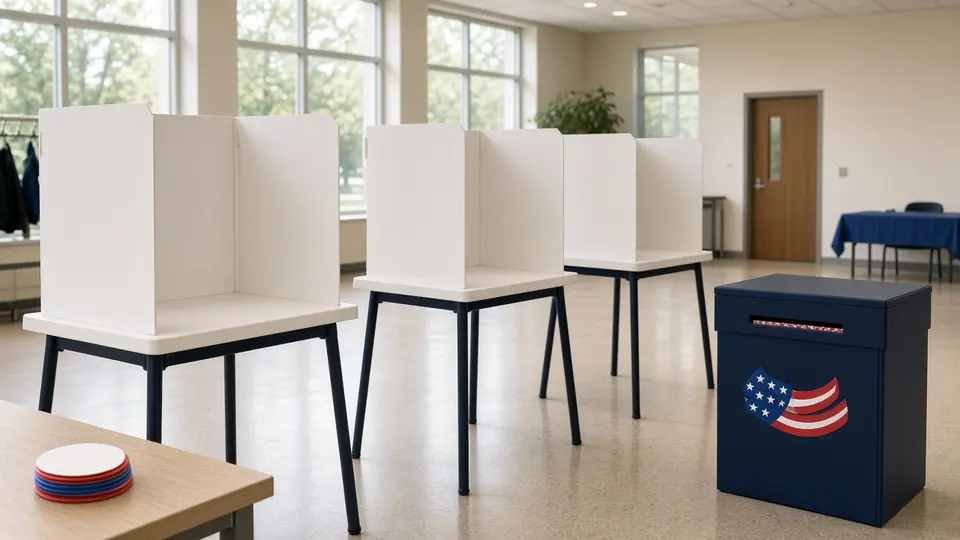
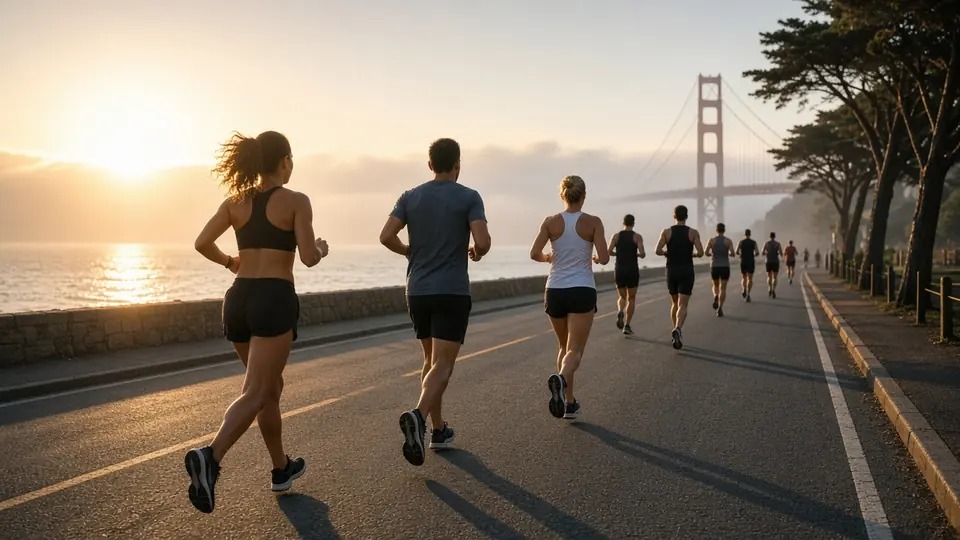

Urban Concierge Brief: SF Bay Area
Monday Nov 2 – Thursday Nov 5, 2026 · Snapshot compiled Mon Nov 2, 2026, 6:10 am PT (BayAreaDailySync)
What's on


Mon Nov 2, 7 pm
Día de los Muertos procession
Mission District; staging from about 6 pm on Bryant between 19th and 22nd, route south on Bryant, west on 24th, north on Mission, east on 22nd.
Details →


Wed Nov 4, 12 pm
Golden State Valkyries WNBA Championship Parade
Starts at the Ferry Building and runs along the northbound side of The Embarcadero to Second Street.
Details →
More in this brief
Where to eat
No Yelp ratings (Yelp blocks automated loads). Michelin pages not re-opened this run; these four are carried from Sunday's briefs.
Kin Khao, Union Square, SF (Parc 55 hotel, 55 Cyril Magnin St) · Thai · Michelin One Star. Michelin praises its "layered, vibrantly flavorful Thai cooking" with a produce-driven northern bent, tucked into an alcove of the hotel. +1 415-362-7456. https://guide.michelin.com/us/en/california/san-francisco/restaurant/kin-khao
Rich Table, Hayes Valley, SF (199 Gough St) · Californian · in the Michelin Guide. A "petite Hayes Valley delight" that is packed nightly; near Civic Center. +1 415-355-9085. https://guide.michelin.com/us/en/california/san-francisco/restaurant/rich-table
Zuni Café, Market St, SF (1658 Market St) · Californian · in the Michelin Guide. Michelin calls it a San Francisco institution known for its laid-back California vibe and locally sourced food, in an iconic, art-filled space. +1 415-552-2522. https://guide.michelin.com/us/en/california/san-francisco/restaurant/zuni-cafe
La Taqueria, Mission, SF (2889 Mission St) · Mexican · in the Michelin Guide. A local favorite that "always has a queue," a few blocks from Monday's procession route. (415) 285-7117. https://guide.michelin.com/us/en/california/san-francisco/restaurant/la-taqueria
Getting around
Muni and cable cars (carried): $2.85 single ride with Clipper, MuniMobile or tap-to-pay ($3.00 cash), good 120 minutes. Day pass $5.70. Cable car $9.00. Visitor Passports 1-day $15, 3-day $35, 7-day $47. Youth 18 and under ride free. https://www.sfmta.com/getting-around/muni/fares
Muni reroutes: Mon: the 27 reroutes from 5 pm, and the 12, 14, 14R, 48, 49 and 67 from 6:45 pm until streets clear after the procession. Wed: the F, N, 2, 9, 9R, 12, 14, 14R and 15 are adjusted 5 am–3 pm for the parade (buses run F line service all day). https://www.sfmta.com/travel-updates
BART:
- At 6:10 am Mon the BART advisory feed shows only the planned 30-minute delays between Millbrae, SFO and Daly City from 9 pm Sun–Thu.
- Yellow Line late-night single tracking in Contra Costa County Nov 2–6.
- Powell St. Station entrance at 4th and Market closes Nov 2–10.
- Coming up: reduced BART-to-OAK service the night of Nov 4 · more Yellow Line late-night single tracking Nov 12–13 · 24th St–Daly City bus bridge Nov 14–15 · Transbay Tube single tracking Nov 21.
Sources: https://www.bart.gov/schedules/advisories · https://www.bart.gov/guide/airport
Bikes and scooters (from the Oct 23 brief): Lyft Bike $1 to unlock plus $0.19/min classic or $0.49/min ebike, or a $15 day pass. Lime and Spin hold SF permits. No sidewalk riding. https://www.lyft.com/bikes/bay-wheels
SFO cars and rides (from the Oct 23 brief): Rental Car Center via AirTrain Blue Line (24 hours). Lyft and Uber pick up on Level 5 of the Domestic Garage. Taxis at the Arrivals center islands. https://www.flysfo.com/passengers/ground-transportation
Where to stay
Per SF Travel, Union Square has most major hotels and the best transit links, with easy transit to Chase Center and the opera (note the Powell BART entrance closure at 4th and Market from Monday). Mission Bay is closest to Chase Center for Monday's Warriors game, but SoMa waterfront and Embarcadero hotels sit inside Wednesday's parade closures; the Mission puts you on Monday's procession route but expect evening closures. https://www.sftravel.com/neighborhoods
Assumptions and refresh
- Public data only, from pages opened Mon Nov 2, 2026, around 6:10 am PT: NWS forecast and alerts, Caltrans District 4 news (nothing newer than Oct 30), the SFMTA travel updates index and parade page, and the BART advisory page. Other items carried from Sunday's briefs. Nobody was contacted and nothing was signed up for.
- This is a snapshot. BayAreaDailySync refreshes it every 8 hours (6 am, 2 pm, 10 pm PT).
- Times are Pacific standard time. Prices only where a cited page lists them.
Not verified
- Yelp ratings (blocked) and Michelin pages (not re-opened; restaurant notes carried).
- Ticket prices for the Sharks and Warriors games. Game times match a public schedule feed this morning but the team pages weren't re-read.
- Warriors vs. Miami Heat on Thu Nov 5 shows on a schedule feed but wasn't confirmed on nba.com, so it's left off the list.
- Valkyries parade details: SFMTA still says they are being finalized; organizer page not opened.
- Día de los Muertos details come from SFMTA; organizer page not opened.
- Election Day polling hours not checked.
- Fares, Lyft Bike, Lime and Spin pricing and SFO notes not re-checked; restaurant hours not checked.
- Muni reroutes and SF street closures come from SFMTA event pages; SFMTA's live alerts widget wasn't displaying this morning.
What changed since the last brief
What changed since the last brief (Sun 10:10 pm): No major changes. Monday night's rain chance dropped to 20% (Tuesday is still 90%), the Beach Hazards Statement was reissued this morning, and the SR-24 overnight ramp closure in Lafayette is done. Today's Día de los Muertos closures and Wednesday's Valkyries parade closures stand as posted.